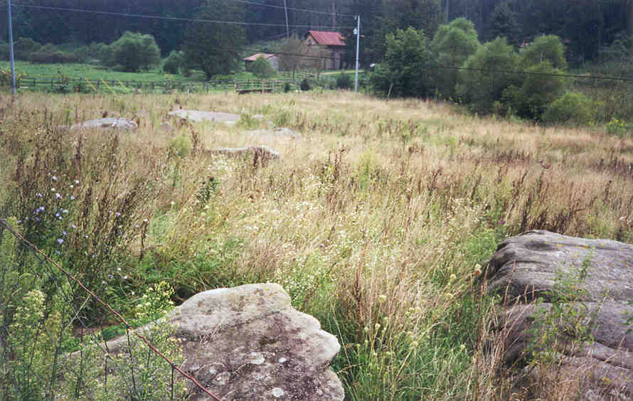
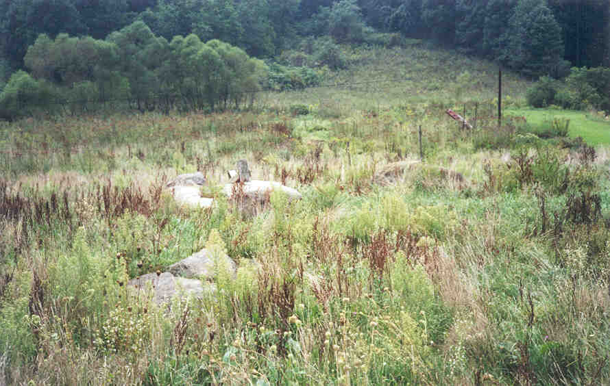
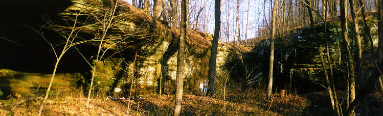
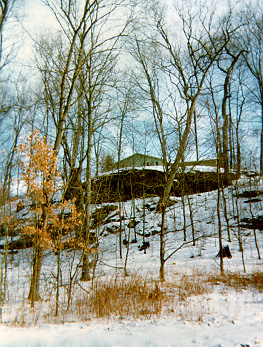
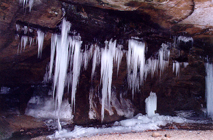
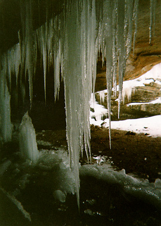
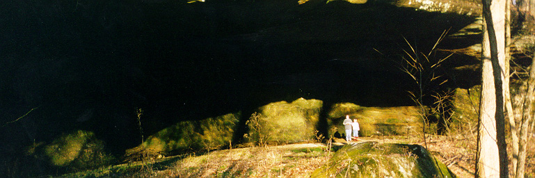

Rain Rock is located in Fallsbury Township, Licking County, and is marked by a couple of interesting rock-related landmarks. First of all, you'll find here a field full of big boulders. As somebody observed a century or so ago, it looks like it rained rocks there.

Apparently at one time Rain Rock was a town, in a way, though it never had a post office or much in the way of permanent residences. It was mostly used as a meeting place for churches and family gatherings, up until about the 1930s, when these came to an end and the spot was largely abandoned. (There's still the Falling Rock Campground nearby.) The name Rain Rock may come from the boulders, but it's also likely that an exposed cave nearby contributed to the naming. This rock shelter was used by campers in the church meeting days; it's a fairly deep, impressive opening halfway up the wooded hill behind the boulder-strewn field.

I was contacted by the current owner of the land where the rock shelter is located. His house sits at the top of the hill, just above the cave itself, as you can see in the next photo. He has photos of his family, home, and property posted on his personal website, which you can visit here.

The interesting thing about this cave in particular is that it exists beneath a spring, which causes trickles and minature waterfalls all throughout. This makes it look like it's raining inside the rock shelter much of the time. Hence (or so I've been told) the name Rain Rock.

As you can see above and below, the waterfalls freeze in the coldest part of winter, leaving thick, jagged stalagtites of solid ice. These icecicles grow enormous largely undisturbed, since so few people even know that the cave is here.

The field with its scattered boulders is, appropriately, located on Rainrock Road, just down from the Falling Rock Campground. The cave is in the hill nearby. If you know any more about the town, campground, or natural formations at Rain Rock, please send me a message and tell me about it.

The Appalachian Man: Rainrock
Back
forgottenohio@yahoo.com